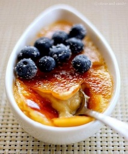
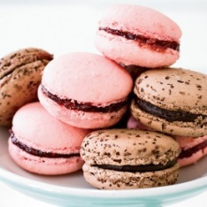
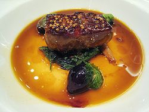
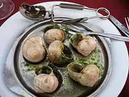

 also known as burnt cream, is a dessert consisting of a rich custard base topped with a contrasting layer of hard caramel. It is normally served at room temperature.
The custard base is traditionally flavored with vanilla, but can also be flavored with lemon or orange (zest), rosemary, lavender, chocolate, Amaretto, Grand Marnier, cinnamon, coffee, liqueurs, green tea, pistachio, hazelnut, coconut, or other flavors.
 is a French sweet meringue-based confection made with egg white, icing sugar, granulated sugar, almond powder or ground almond, and food colouring. The macaron is commonly filled with ganache, buttercream or jam filling sandwiched between two biscuits (cookies).
The confection is characterised by smooth, squared top, ruffled circumference, and a flat base. It is mildly moist and easily melts in the mouth.Macarons can be found in a wide variety of flavors that range from the traditional (raspberry, chocolate) to the new (foie gras, matcha).
 Foie gras is a food product made of the liver of a duck or goose that has been specially fattened. By French law,foie gras is defined as the liver of a duck or goose fattened by force-feeding corn with a feeding tube, although in Spain and other countries outside of France it is occasionally produced using natural feeding.
Foie gras is a popular and well-known delicacy in French cuisine. Its flavor is described as rich, buttery, and delicate, unlike that of an ordinary duck or goose liver. Foie gras is sold whole, or is prepared into mousse, parfait, or pâté, and may also be served as an accompaniment to another food item, such as steak. French law states that "Foie gras belongs to the protected cultural and gastronomical heritage of France."
 Escargot is a dish of cooked land snails, usually served as an appetizer in France and in French restaurants. The word escargot is also sometimes applied to the living snails of those species which are commonly eaten in this way.
Not all species of land snail are edible, and many are too small to make it worthwhile to prepare and cook them. Even among the edible species, the palatability of the flesh varies from species to species. In France, the species Helix pomatia is most often eaten. The "petit-gris" Helix aspersa is also eaten, as is Helix lucorum. Several additional species, such as Elona quimperiana, are popular in Europe; see heliciculture.